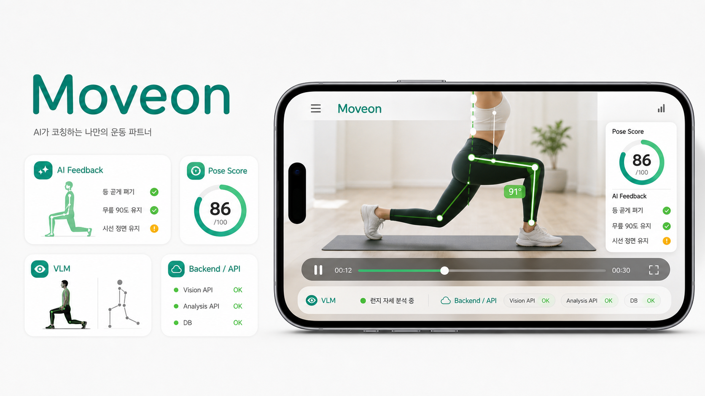
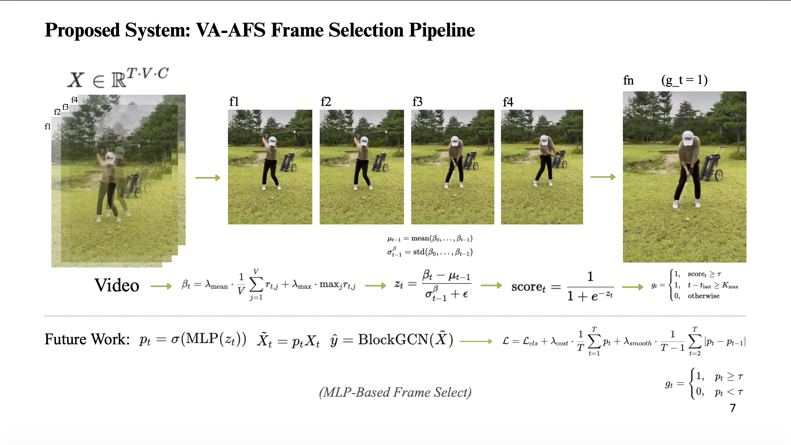
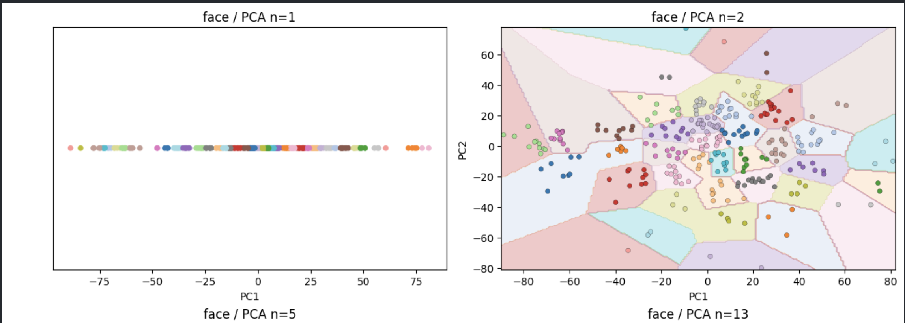
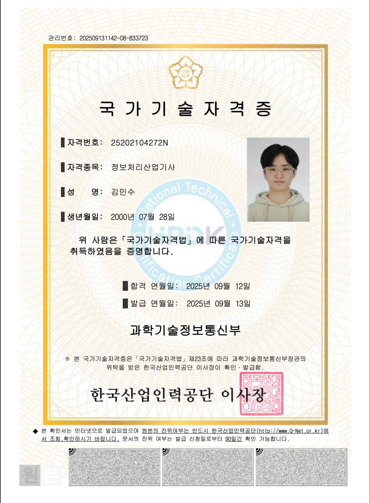

전공
Artificial Intelligence Engineering
About Me
서울예술대학교 실용음악과에서 싱어송라이터를 전공하며 곡을 쓰고 무대를 준비했습니다. 지금은 조선대학교 인공지능공학과에서 개발을 공부하고 있고, 결과물이 사람에게 닿기까지의 흐름에 관심이 많아 앱 화면, 서버 API, 데이터 처리 과정, 팀의 작업 흐름을 함께 보며 서비스를 만들어가고 있습니다.
최근에는 운동 영상 피드백 서비스 Moveon에서 기능 기획, 기술 개발, 프론트엔드-백엔드-모델 서버 연동, Jira-Notion 협업 흐름까지 함께 챙기고 있습니다. 프로젝트가 아이디어에서 실제 동작하는 서비스로 이어지는 과정을 넓게 보는 편입니다.
Artificial Intelligence Engineering
Computer Vision, VLM, Data Analysis, ML Service Backend
AI Backend Developer / Technical Project Lead
Ownership
문제 정의, 핵심 기능 선정, 화면 흐름과 사용자 피드백 구조를 직접 설계합니다.
기술 스택 선정, API 연동 방식, 데이터 처리 흐름을 정하고 구현까지 책임집니다.
Jira, Notion 등 협업 툴을 연결해 이슈, 문서, 일정이 흩어지지 않도록 협업 흐름을 정리합니다.
Education
Department of Artificial Intelligence Engineering
Practical Music · Singer-Songwriter Major
Skills
Java, C++, JavaScript, TypeScript
JavaScript/TypeScript: Intermediate · Java/C++: Basic+Spring Boot, NestJS, REST API, Postgres
API Design: Basic+ · Database: BasicReact Vite, React Native Expo, HTML, CSS
React: Basic+ · Mobile App: BasicScikit-learn, Data Analysis, preprocessing, model evaluation
scikit-learn: Basic+ · Data Analysis: Basic+Git, GitHub, Docker, VS Code, Jira, Notion
Git: Basic+ · Docker: BasicProjects

AI App · Team Project · Integration
React Native 기반 운동 영상 피드백 서비스입니다. VLM/AI 모델을 활용해 운동 영상을 분석하고, 사용자가 이해할 수 있는 피드백을 앱 화면과 백엔드 API로 전달하는 구조를 개발 중입니다. 서비스 기획, 핵심 기능 정의, 기술 개발, 통합 흐름 정리를 주도적으로 맡았습니다.

Computer Vision · Python
Adaptive Frame Sampling 기반 영상 분석 프로젝트입니다. 영상 프레임을 고정 간격으로만 다루는 방식의 비효율을 줄이고, 분석에 필요한 프레임을 적응적으로 선택하는 방향으로 설계했습니다. 문제 정의, 실험 방향, 보고서 구성, 구현 흐름을 주도적으로 정리했습니다.

Data Analysis · ML
Scikit-learn 기반으로 전처리와 모델 탐색을 수행한 데이터 분석 프로젝트입니다. PCA, LDA 등 차원 축소/전처리를 적용하고 Optuna로 탐색한 뒤 Random Forest 분류 모델을 구성했습니다. 분석 방향을 잡고, 전처리-학습-평가 흐름을 주도적으로 정리했습니다.
Experience

소프트웨어 개발 프로세스, 데이터베이스, 네트워크, 시스템 운영 기초를 학습했습니다.

데이터 분석과 머신러닝 실습을 중심으로 팀 학습 및 프로젝트 경험을 쌓고 있습니다.

보컬과 피아노 포지션으로 활동하며 협업, 무대 기획, 창작 경험을 이어가고 있습니다.
AI Software 개발자 과정에서 Node.js, Python, Java 기반의 웹/서버 개발 기초를 학습했습니다.
Career Goal
Contact
팀 리딩, AI 서비스 구현, 백엔드 통합, 데이터 분석 프로젝트, 오픈소스 활동에 관심이 있습니다.